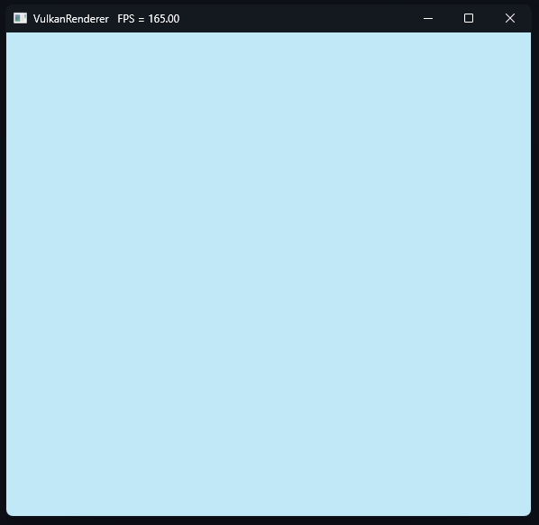
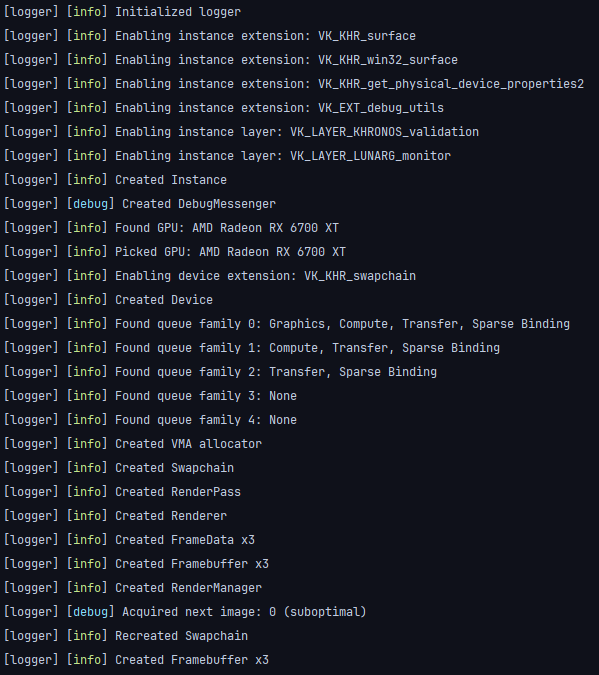

In this update I will be going over the new RenderManager class and how it is used to manage the rendering of the application.
Swapchain
First off, the Swapchain class. It handles the creation and recreation of the swapchain. A bunch of default values are set in the createInfo struct
supportDetails.formats = gpu.getHandle().getSurfaceFormatsKHR(*surface);
supportDetails.presentModes = gpu.getHandle().getSurfacePresentModesKHR(*surface);
supportDetails.capabilities = gpu.getHandle().getSurfaceCapabilitiesKHR(*surface);
auto surfaceFormat = selectSwapSurfaceFormat();
auto presentMode = selectSwapPresentMode();
extent = selectSwapExtent();
auto preTransform = (supportDetails.capabilities.supportedTransforms & vk::SurfaceTransformFlagBitsKHR::eIdentity)
? vk::SurfaceTransformFlagBitsKHR::eIdentity
: supportDetails.capabilities.currentTransform;
uint32_t minImageCount =
std::clamp(3u, supportDetails.capabilities.minImageCount, supportDetails.capabilities.maxImageCount);
vk::CompositeAlphaFlagBitsKHR compositeAlpha;
if (supportDetails.capabilities.supportedCompositeAlpha & vk::CompositeAlphaFlagBitsKHR::ePreMultiplied)
{
compositeAlpha = vk::CompositeAlphaFlagBitsKHR::ePreMultiplied;
}
else if (supportDetails.capabilities.supportedCompositeAlpha & vk::CompositeAlphaFlagBitsKHR::ePostMultiplied)
{
compositeAlpha = vk::CompositeAlphaFlagBitsKHR::ePostMultiplied;
}
else if (supportDetails.capabilities.supportedCompositeAlpha & vk::CompositeAlphaFlagBitsKHR::eInherit)
{
compositeAlpha = vk::CompositeAlphaFlagBitsKHR::eInherit;
}
else
{
compositeAlpha = vk::CompositeAlphaFlagBitsKHR::eOpaque;
}
vk::SwapchainCreateInfoKHR createInfo{
.surface = *surface,
.minImageCount = minImageCount,
.imageFormat = surfaceFormat.format,
.imageColorSpace = surfaceFormat.colorSpace,
.imageExtent = extent,
.imageArrayLayers = 1,
.imageUsage = vk::ImageUsageFlagBits::eColorAttachment,
.imageSharingMode = vk::SharingMode::eExclusive,
.preTransform = preTransform,
.compositeAlpha = compositeAlpha,
.presentMode = presentMode,
.clipped = VK_TRUE,
.oldSwapchain = oldSwapchain,
};
handle = vk::raii::SwapchainKHR{device.getHandle(), createInfo};
Some of these might get changed later on, but for now they are fine. The Swapchain class also has a recreate method, which gets called when the window is resized. It will then recreate the swapchain with the new extent.
void Swapchain::recreate()
{
auto [width, height] = window.getFramebufferSize();
while (width == 0 || height == 0)
{
std::tie(width, height) = window.getFramebufferSize();
window.waitEvents();
}
device.getHandle().waitIdle();
createSwapchain(*handle);
LOG_INFO("Recreated Swapchain")
}
void createSwapchain(vk::SwapchainKHR oldSwapchain = VK_NULL_HANDLE);
The createSwapchain method can take an optional oldSwapchain parameter, which is used when recreating the swapchain.
FrameData
Each frame has its own FrameData object. This object contains the CommandBuffer, Fence and Semaphores for the frame.
vk::raii::CommandBuffer *getCommandBuffer();
[[nodiscard]] const vk::raii::Semaphore &getSemaphore(uint32_t index) const;
[[nodiscard]] const vk::raii::Fence &getFence() const;
These then get used in the RenderManager class to get the necessary data for the current frame.
CommandPool
When the vk::raii::CommandPool gets destroyed, it will automatically free all the command buffers that were allocated. This does not include the vk::raii::CommandBuffer objects that were created from the pool. These need to be freed manually. vk_raii_ProgrammingGuide
The CommandPool can allocate multiple command buffers at once, but to allow more requests after the first allocation, the CommandPool class stores the vk::raii::CommandBuffers in an unordered map. A pointer to the vk::raii:: CommandBuffers can then be retrieved with the getCommandBuffers method.
std::optional<vk::raii::CommandBuffers *> getCommandBuffers(uint32_t key) const;
The unordered map might not be the best solution, but it works for now.
Framebuffer
A framebuffer is a collection of attachments used for rendering. The Framebuffer constructor takes a RenderTarget, which contains all the ImageViews(attachments) that will be used in the framebuffer.
Framebuffer::Framebuffer(const Device &device, const RenderPass &renderPass,
const rendering::RenderTarget &renderTarget)
{
std::vector<vk::ImageView> imageViews;
imageViews.reserve(renderTarget.imageViews.size());
for (const auto &imageView : renderTarget.imageViews)
{
imageViews.emplace_back(*imageView);
}
handle = vk::raii::Framebuffer{device.getHandle(),
vk::FramebufferCreateInfo{
.flags = vk::FramebufferCreateFlags{},
.renderPass = *renderPass.getHandle(),
.attachmentCount = static_cast<uint32_t>(renderTarget.imageViews.size()),
.pAttachments = imageViews.data(),
.width = renderTarget.extent.width,
.height = renderTarget.extent.height,
.layers = 1,
}};
}
The vk::raii::Framebuffer only accepts an array of vk::ImageViews, so the vk::raii::ImageViews need to be converted to vk::ImageViews.
Renderer
The Renderer is responsible for creating drawing the scene. It takes a RenderOptions struct as a parameter in its constructor. This struct currently holds the clearValue and the number of subpasses. With this information a RenderPass with a compatible RenderTarget can be created.
Renderer::Renderer(const core::Device &device, core::Swapchain *swapchain, RenderOptions renderOptions)
: device{device}, swapchain{swapchain}, renderOptions{std::make_unique<RenderOptions>(renderOptions)}
{
createRenderTargets();
createRenderSubstages();
std::vector<vk::SubpassDescription> subpassDescriptions(renderOptions.numSubpasses);
std::vector<vk::AttachmentReference> attachments(renderOptions.numSubpasses);
attachments[0] = vk::AttachmentReference{0, vk::ImageLayout::eColorAttachmentOptimal};
for (auto i = 0u; i < renderOptions.numSubpasses; ++i)
{
subpassDescriptions[i].colorAttachmentCount = 1;
subpassDescriptions[i].pColorAttachments = attachments.data();
subpassDescriptions[i].pDepthStencilAttachment = nullptr;
subpassDescriptions[i].pInputAttachments = nullptr;
subpassDescriptions[i].pPreserveAttachments = nullptr;
subpassDescriptions[i].pResolveAttachments = nullptr;
subpassDescriptions[i].pipelineBindPoint = vk::PipelineBindPoint::eGraphics;
subpassDescriptions[i].flags = {};
}
std::vector<vk::SubpassDependency> dependencies(renderOptions.numSubpasses - 1);
for (auto i = 0u; i < renderOptions.numSubpasses - 1; ++i)
{
dependencies[i].srcSubpass = i;
dependencies[i].dstSubpass = i + 1;
dependencies[i].srcStageMask = vk::PipelineStageFlagBits::eColorAttachmentOutput;
dependencies[i].dstStageMask = vk::PipelineStageFlagBits::eColorAttachmentOutput;
dependencies[i].srcAccessMask = vk::AccessFlagBits::eColorAttachmentWrite;
dependencies[i].dstAccessMask = vk::AccessFlagBits::eColorAttachmentWrite;
dependencies[i].dependencyFlags = {};
}
renderPass = std::make_unique<core::RenderPass>(device, *renderTargets[0], subpassDescriptions, dependencies);
LOG_INFO("Created Renderer")
}
RenderPass
OpenGl has no concept of a render pass. It is possible to ommit the render pass in Vulkan using dynamic rendering, but for this project I will be using a render pass.
RenderPass::RenderPass(const core::Device &device, const rendering::RenderTarget &renderTarget,
const std::vector<vk::SubpassDescription> &subpassDescriptions,
const std::vector<vk::SubpassDependency> &subpassDependencies)
: device{device}
{
auto createInfo =
vk::RenderPassCreateInfo{.flags = vk::RenderPassCreateFlags{},
.attachmentCount = static_cast<uint32_t>(renderTarget.attachments.size()),
.pAttachments = renderTarget.attachments.data(),
.subpassCount = static_cast<uint32_t>(subpassDescriptions.size()),
.pSubpasses = subpassDescriptions.data(),
.dependencyCount = static_cast<uint32_t>(subpassDependencies.size()),
.pDependencies = subpassDependencies.data()};
handle = vk::raii::RenderPass{device.getHandle(), createInfo};
LOG_INFO("Created RenderPass")
}
The RenderPass class receives all the necessary create info from the Renderer class. This includes descriptions of all attachments that will be used, the subpass descriptions and the subpass dependencies.
RenderTarget
The RenderTarget is a struct that contains the extent, the imageViews and attachmentDescriptions.
struct RenderTarget
{
vk::Extent2D extent;
std::vector<vk::raii::ImageView> imageViews;
std::vector<vk::AttachmentDescription> attachments;
};
This information gets used when creating the Framebuffer and RenderPass.
RenderSubstage
The RenderSubstage is not doing anything at the moment. It represents a subpass that needs to be drawn. When the draw method of the Renderer is called, it will iterate over all the RenderSubstages and call their draw in turn.
Render loop
Every Frame the RenderManager will call the methods beginFrame, beginRenderPass ,draw, endRenderPass and endFrame.
void RenderManager::beginFrame()
{
device.getHandle().waitForFences(*frameData[activeFrame]->getFence(), VK_TRUE,
std::numeric_limits<uint64_t>::max());
auto [result, value] = swapchain->acquireNextImage(frameData[activeFrame]->getSemaphore(0));
switch (result)
{
case vk::Result::eSuccess:
break;
case vk::Result::eSuboptimalKHR:
LOG_DEBUG("Acquired next image: {} (suboptimal)", value)
if (recreateSwapchain())
value =
swapchain->acquireNextImage(vk::raii::Semaphore{device.getHandle(), vk::SemaphoreCreateInfo{}}).second;
break;
default:
LOG_ERROR("Acquired next image: {} (error)", value)
throw std::runtime_error{"Failed to acquire next image"};
}
imageIndex = value;
activeCommandBuffer = frameData[activeFrame]->getCommandBuffer();
frameActive = true;
device.getHandle().resetFences(*frameData[activeFrame]->getFence());
}
beginFrame will first wait for the fence to be signaled. This fence gets signaled when the frame is finished. It will then acquire the next image from the swapchain. If the swapchain is suboptimal, it will recreate the swapchain. Finally, it will reset the fence and set the frameActive flag to true.
void RenderManager::endFrame()
{
assert(frameActive && "Frame not active");
auto presentQueue = device.getQueueWithFlags(0, vk::QueueFlagBits::eGraphics).getHandle();
vk::PipelineStageFlags waitStages[] = {vk::PipelineStageFlagBits::eColorAttachmentOutput};
presentQueue.submit(vk::SubmitInfo{.waitSemaphoreCount = 1,
.pWaitSemaphores = &*frameData[activeFrame]->getSemaphore(0),
.pWaitDstStageMask = waitStages,
.commandBufferCount = 1,
.pCommandBuffers = &*(*activeCommandBuffer),
.signalSemaphoreCount = 1,
.pSignalSemaphores = &*frameData[activeFrame]->getSemaphore(1)},
*frameData[activeFrame]->getFence());
auto result =
presentQueue.presentKHR(vk::PresentInfoKHR{.waitSemaphoreCount = 1,
.pWaitSemaphores = &*frameData[activeFrame]->getSemaphore(1),
.swapchainCount = 1,
.pSwapchains = &*swapchain->getHandle(),
.pImageIndices = &imageIndex,
.pResults = nullptr});
if (window.isResized())
{
recreateSwapchain();
}
else
{
switch (result)
{
case vk::Result::eSuccess:
break;
case vk::Result::eSuboptimalKHR:
LOG_DEBUG("Presented image: {} (suboptimal)", activeFrame)
recreateSwapchain();
break;
case vk::Result::eErrorOutOfDateKHR:
LOG_DEBUG("Presented image: {} (out of date)", activeFrame)
recreateSwapchain();
break;
default:
LOG_ERROR("Presented image: {} (error)", activeFrame)
throw std::runtime_error{"Failed to present image"};
}
}
frameActive = false;
activeFrame = activeFrame++ % framesInFlight;
}
endFrame will first submit the command buffer to the queue. It will then present the image to the swapchain.
At the end of the frame, the frameActive flag is set to false and the activeFrame is incremented. Active frame is the index of the frameData that is currently being used. This index is used to get the correct frameData object. This is seperate from the imageIndex, which is the index of the image in the swapchain.
void RenderManager::beginRenderPass()
{
assert(frameActive && "Frame not active");
activeCommandBuffer->reset(vk::CommandBufferResetFlagBits::eReleaseResources);
activeCommandBuffer->begin(vk::CommandBufferBeginInfo{.flags = vk::CommandBufferUsageFlagBits::eOneTimeSubmit});
vk::RenderPassBeginInfo renderPassBeginInfo{.renderPass = *renderPass->getHandle(),
.framebuffer = *framebuffers[imageIndex]->getHandle(),
.renderArea = vk::Rect2D{{0, 0}, swapchain->getExtent()},
.clearValueCount = 1,
.pClearValues = renderer->getClearValue()};
activeCommandBuffer->beginRenderPass(renderPassBeginInfo, vk::SubpassContents::eInline);
}
void RenderManager::endRenderPass()
{
assert(frameActive && "Frame not active");
activeCommandBuffer->endRenderPass();
activeCommandBuffer->end();
}
void RenderManager::draw()
{
assert(frameActive && "Frame not active");
}
begin and end render pass are pretty self-explanatory. The draw method is empty for now, but it will be used to draw the scene.
bool RenderManager::recreateSwapchain()
{
swapchain->recreate();
renderer->updateRenderTargets();
createFramebuffers();
window.setResized(false);
return true;
}
Recreating the swapchain also means recreating the framebuffers. This is done in the recreateSwapchain method.
The final loop looks like this:
void Application::onUpdate()
{
renderManager->beginFrame();
renderManager->beginRenderPass();
renderManager->draw();
renderManager->endRenderPass();
renderManager->endFrame();
}
In draw the scene will be drawn. This will be done in the next update.
Results
The application is now blue. The clear color is set to blue in the RenderOptions struct.

Logging also correctly shows the swapchain being recreated when the window is resized.
